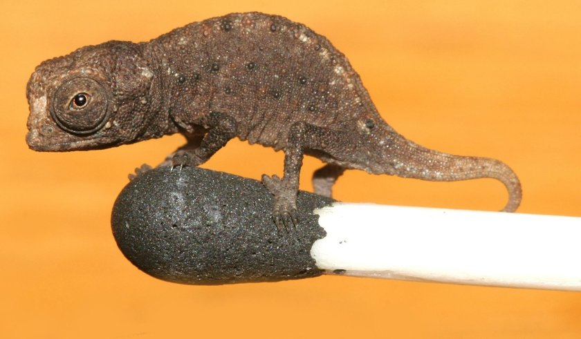

About
Reptiles are tetrapod animals in the class or clade Reptilia /rɛpˈtɪliə/. As a class in Linnean taxonomy, Reptilia refers to a paraphyletic grouping comprising all amniotes (vertebrates which encase their embryos in a series of protective sacs) except synapsids (mammals and their extinct relatives) and Aves (birds). The class Reptilia comprises turtles, crocodilians, snakes, amphisbaenians, lizards, tuatara, and their extinct relatives. The study of the traditional reptile orders, historically combined with that of modern amphibians, is called herpetology.